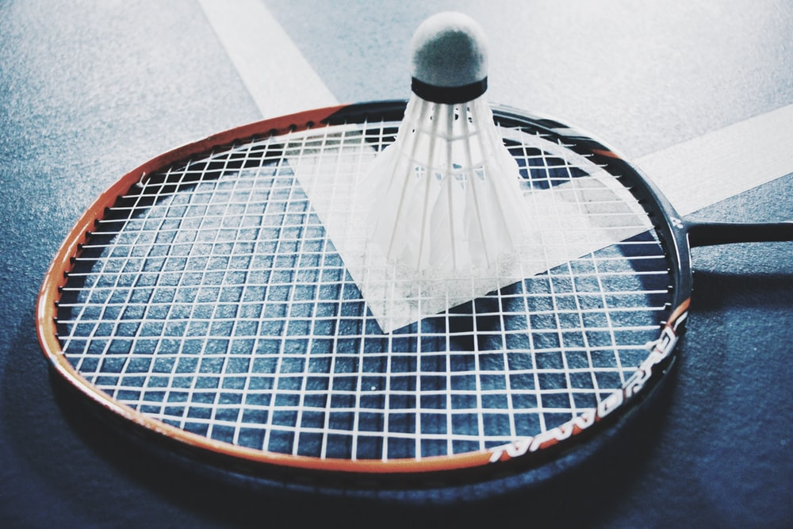
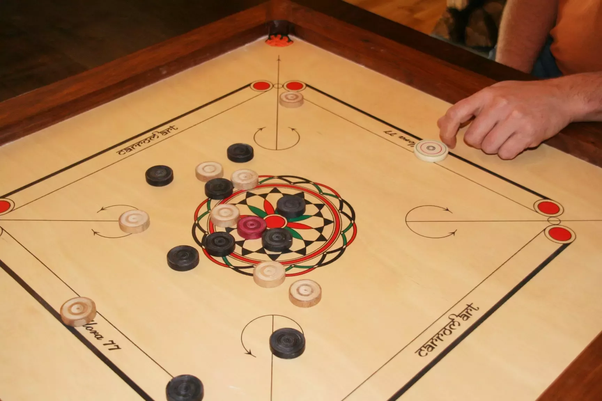
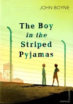

|
|
1) Badminton
Badminton has been an important part of my life. It is one of things I love playing putting my heart and soul into it.
I started playing badminton when i was nine years old. My dad used to play occansionally and i used to see him play.I then became a badminton
afficanado.Won awards in many competitions. This game has always taught me how to handle difficult situations in poised way.
|
 |
2) Chess
Playing Chess has always been fun and a mind booster. This 64 squared game always keeps you on nerve
and has contributed in improving my brain functioning. I have participated in many chess competitions
when i was in school. I still play with many people around the world as i was introduced to Chess.com this is
a fascinating and a highly competitive platform where you can play with many chess intellectuals.
|
|
3) Carrom
I love playing almost every sport and carrom is one of them. When i am bored
this game is what i cling on. When played with family and friends it relieves my stress endured in the hectic
schedule.
|
 |
4)Reading Books
I am not a binge reader but I love to read books especially when i am
travelling. One of my favourite books i have ever read were Boy in Stripped Pyjamas and What its like being you.
|
 |
4)Watching Tv Series
I am fond of watching Tv series which is intriguing and keeps me at the edge of my seat.
Sherlock Holmes starring Benedict Cumberbatch has always been my favourite.
|
|
5)Coding
Last but not the least this what i love the most. Learning new programming languages
and trying new stuff in them has always been fun.I am a binge coder.I was introduced to this field when i was
in 9th grade when i started learning Java. From then this field has ineterested me to a whole new level.
|  |